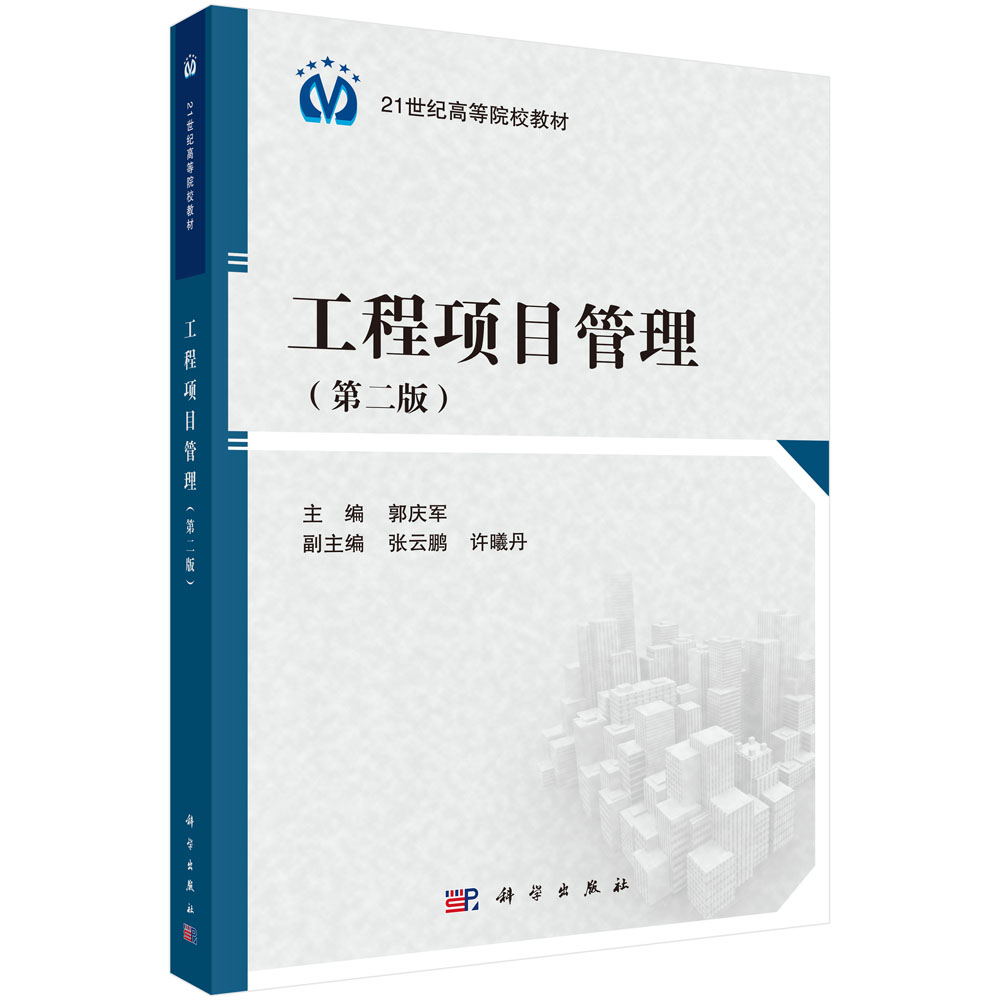

工程项目管理

介绍
结合工程项目管理实践，从工程项目生命周期及主要职能领域两个视角阐述工程项目管理的理论及方法。一方面，以时间为关注点，阐述从工程项目前期策划与决策阶段的管理、工程项目设计阶段的管理、工程项目招投标及合同管理、工程项目施工过程中的项目管理直至工程项目质量验收及竣工验收阶段的管理理论及方法。另一方面，以工程项目主要知识领域为关注点，阐述工程项目组织管理、工程项目进度管理、工程项目成本管理、工程项目质量管理、工程项目风险管理、工程项目职业健康安全与环境管理及工程项目信息管理的理论及方法。